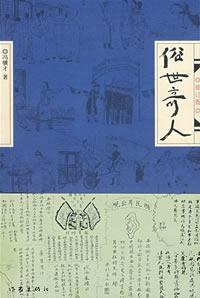

《俗世奇人》

总体观点
冯骥才以清末民初天津卫九河下梢的码头市井为背景，刻画了一幅“手艺通神、脾性奇绝”的草根能人图卷，揭示了中国民间社会在严酷生存竞争中锤炼出的行规、自尊与生存智慧。
“码头上的人，全是挤出来的；手艺硬，腰杆才硬”：作品提炼出民间社会“不依官府、全凭本事”的人格风骨，手艺不仅是谋生手段，更是平凡人在天地间安身立命、不受欺辱的尊严支柱。
全书熔铸古典白话笔记小说的简练笔法与天津方言的幽默脆爽，极简白描中见跌宕起伏，以“短、平、奇、俏”的叙事形式，实现了对中国传统市井说书与平民传奇文学的现代复兴。
核心观点
-
1. 手艺是市井之人的神骨：一招绝活便能在险恶江湖立于不败之地
在九河下梢的天津卫码头，没有显赫出身的小人物要想生存立足，唯有把一门技艺打磨到神乎其神的极致，手艺是草根抵抗命运剥削的最强护甲。
《刷子李》刷浆时必穿一身黑衣，干完活身上绝不落一个白点，若有一点白便白给干活；这门绝活让他不仅成为富绅座上客，更赢得了全城匠人的敬畏。 -
2. 规矩大过天：天津卫码头文化的铁律是认规认艺、严禁僭越
市井江湖有一套无形却极其刚性的行规，任何人无论贫富贵贱都必须依规行事，打破规矩者即便身怀绝技也必遭行业唾弃与现实惩罚。
《苏七块》接骨必先拿七块现大洋，差一分一厘绝不出手；这规矩看似不近人情，实则是手艺人在弱肉强食社会中防范赖账、维护职业尊严的刚性屏障。 -
3. 市井回击的无声机锋：不靠权势，以技艺完成对豪横者的体面反杀
面对权贵恶霸的羞辱，底层艺人从不正面对抗硬碰硬，而是用自己的绝活设计出令对方哑口无言、威风扫地的巧妙反击，尽显平民智慧。
《泥人张》在天会轩饭庄面对恶霸张三爷的侮辱，面无表情在桌底以袖口捏泥，眨眼间捏出张三爷丑态泥像，次日在街头集市贱卖，让张三爷颜面扫地。 -
4. 大巧若拙的生存情商：察言观色化解杀身大祸的世俗机变
身处官商复杂的市井名利场，光有手艺还不够，还必须具备机敏过人的口才与识人本领，在电光石火的危机时刻扭转乾坤。
《好嘴杨巴》在李鸿章误将茶汤上的碎芝麻认作脏土而勃然大怒的千钧一发之际，跪地巧称“求中堂大人赏脸尝尝杨巴特制芝麻碎”，化凶险为恩赏。 -
5. 艺痴者技必精，虚妄者必自毙：脱离本分附庸风雅的讽刺悲剧
民间崇尚的是实打实的手艺，若本无本领却硬要打肿脸充胖子、附庸风雅，往往会在江湖高手的冷眼与现实算计中栽大跟头。
《冯五爷》本是官宦后代，不甘平庸偏要开饭馆附庸风雅，结果被店里精明的伙计胖刘等人暗中做假账倒卖掏空，五爷到头来赔得精光吐血大病。 -
6. 义薄云天的江湖契约：草莽豪杰之间跨越身份的信义千金
天津卫不仅有算计与手艺，更有一诺千金、生死相托的草莽豪气，这种来自民间的朴素正义往往比官府律法更为炽热真实。
《小杨月楼义结李金鏊》中名伶小杨月楼落难天津被地头蛇敲诈，混混头子李金鏊挺身而出倾家荡产替其赎身，小杨月楼成名后不忘旧恩重金相报。 -
7. 能人死于能人之手：对自身绝技过度迷信引发的宿命反噬
手艺人往往成于绝技，也极易溺于狂傲；一旦对自然与未知丧失敬畏，盲目逞能，往往会死在自己最得意的本领之下。
《大回》善游水，无论波涛汹涌还是寒冬冰窟都能如游鱼出入，因自负水性天下一绝，竟在暴雨山洪中执意捞浮木，最终被暗流卷入漩涡溺亡。
全书结构
-
第一单元：医侠与匠心神技（《苏七块》《刷子李》《酒婆》）
刻画三位身怀奇能的底层匠人：接骨神医苏七块坚持“先给七块大洋再瞧病”的规矩与华大夫巧解尴尬；刷子李一身黑衣粉刷不沾白点的神技；酒婆喝掺水酒醉步如舞却死于真酒的荒诞讽刺。
分析《酒婆》中老板平日掺水酒婆走路摇曳生姿安然无恙，老板良心发现给纯酒反而让酒婆醉倒死于马路车轮下的深刻反讽。 -
第二单元：市井勇力与附庸浮名（《死鸟》《张大力》《冯五爷》）
讲述市井中的奇人怪癖与性格局限：贺道爷养八哥能学舌骂官府却终招祸；石锁张大力力拔千斤却因过于耿直被无聊挑衅；冯五爷放不下少爷架子开饭庄被奸刁伙计算计破产。
《张大力》轻松举起城门口数百斤石锁，但发现石锁底刻着“举起也是白举”时一笑了之的大智若愚。 -
第三单元：鉴赏慧眼与舌尖机锋（《蓝眼》《好嘴杨巴》《蔡二少爷》）
聚焦古董字画鉴赏与官场应酬的机锋对决：当铺鉴画大师蓝眼终日打雁却被假《草堂图》蒙蔽双眼；好嘴杨巴三寸不烂之舌巧妙替李鸿章解围；蔡二少爷嗜琴如命的败家狂狷。
《蓝眼》中当铺名家仅凭画轴气息断真伪，被仇家以旧绫裱新画的高超做旧术骗走重金，气得双眼失明。 -
第四单元：怪癖文人与专精绝活（《背头杨》《认牙》《青云楼主》）
展示行当里的偏门奇能：背头杨以梳理发髻名震津门且脾气古怪；牙医高兰亭一眼看牙便能推断死者身份乃至冤情；青云楼主附庸风雅收藏折扇却被窃贼反套路洗劫。
《认牙》中高大夫单凭一枚残缺臼齿的磨损痕迹与填药成分，当堂断定无名浮尸正是失踪富商，破获凶杀奇案。 -
第五单元：伶界信义与神艺打脸（《小杨月楼义结李金鏊》《泥人张》《绝盗》）
全书最具传奇色彩的篇章：名伶小杨月楼与天津混混李金鏊一诺千金的结义佳话；泥人张在饭馆袖里捏泥人不露声色惩戒恶霸海张五；飞贼绝盗不动声色盗取巡警总办金表的绝技。
《泥人张》将泥人摆在杂货铺柜台大声标价叫卖“贱卖海张五”，以艺术讽刺剥夺恶霸的心理威慑力。 -
第六单元：异能迷狂与幻灭宿命（《小达子》《大回》《刘道元活出殡》）
收录三篇带有寓言意味的悲喜剧：小达子善甩弹弓百步穿杨却玩火自焚；大回仗着浪里白条水性天下一绝最终溺毙恶水；刘道元为看谁真心哭自己生前举办荒诞活出殡。
《刘道元活出殡》中刘道元躺在棺材里偷听亲友吊唁，结果听到的全是争夺遗产与私下嘲讽，一气之下从棺材里坐起吓晕满堂宾客。